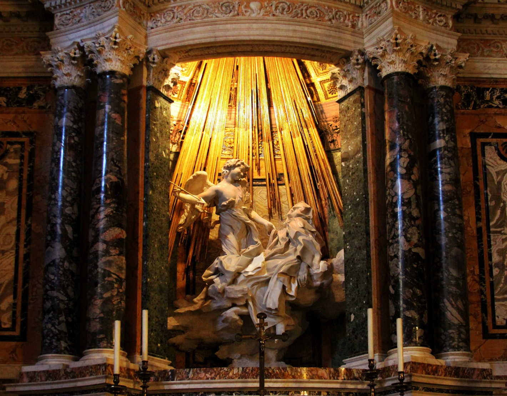

Opera religiosa di stile barocco scolpita da Gian Lorenzo Bernini tra il 1647 e il 1652. Rappresenta Santa Teresa d'Avila in
estasi mistica. Bernini rappresenta Santa Teresa in estasi, nell'atto in cui è sopraffatta dalla soprannaturale
visione di Dio. La santa è scolpita distesa su una coltre di nuvole, mentre un angelo sorridente, più simile a
Cupido che a un'entità spirituale cristiana, sta per trafiggerle simbolicamente il cuore con una freccia.
Dietro, al di sopra del gruppo scultoreo, si trova una cascata di raggi dorati illuminati da un'apposita finestra
nascosta, che allude scenograficamente alla presenza divina. La levigazione è precisa e particolareggiata, infatti
i personaggi sembrano attori su un palco; ciò lo possiamo osservare grazie alla presenza, ai lati della scultura, di
palchetti, dove sono rappresentati i membri della famiglia del cardinale Cornaro, che assistono alla scena.
Prevalgono le linee curve in particolar modo per la rappresentazione dei personaggi e anche delle nuvole su cui
giace Santa Teresa.
L'Estasi di santa Teresa è nota anche come Transverberazione di Santa Teresa d'Avila. Il termine transverberazione
deriva dal latino "trans verberare", cioè trafiggere. Secondo l'interpretazione mistica cattolica, Cristo o un angelo
trafiggono fisicamente con un oggetto affilato il cuore del fedele. Bernini inoltre si ispirò ad un passo riportato
negli scritti della Santa. La religiosa descrisse una delle sue esperienze mistiche definite come rapimento
celeste (Santa Teresa d'Avila, Autobiografia, XXIX, 13). Il dardo che scaglia il Cherubino è, quindi, il simbolo
dell'amore divino.
